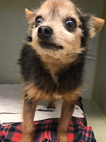
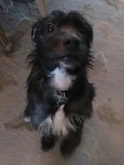
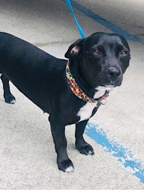
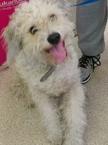
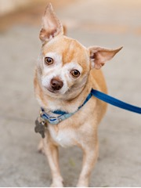

Adoption hotline: 310.379.0154
Meet any of our dogs by appointment
Dogs available for adoption

Chapo
Yorkie
Male
11 years
4 lbs
I’m sure Chapo was bought as a puppy. So cute and tiny. Now that
novelty has worn off. He’s 11! Just discarded. Chapo has so much
more love to give. He’s the perfect age! He’s not too old. He’s
tiny! Let Chapo live out his senior years the way that he
deserves. Loved and cherished.

Mitch
Terrier
Male
1 y/o
20 lbs
Mitch was originally adopted from Rover rescue in the late
summer of 2018. We kept in touch with his owner, thinking all
was good with Mitch. In March of 2019 we received a call that
broke our heart. Mitch was in a shelter in DENVER COLORADO! So
what do we do, we fly out to Denver to bail him and drive him
back home to Los Angeles. Mitch is such a love, a bit shy, super
loyal, and a bit oversized lap dog.
Babu
Cocker Spaniel
Female
11 y/o
12 lbs
Babu was rescued from a hoarding situation. When she came to us
she was a matted, neglected mess. babu is the most amazing
little dog. She’s just chill, and easy going. She deserves to
live her senior life surrounded by love.

Pepsi
Lab/basset hound
Female
1 y/o
15 lbs
Those short legs! Pepsi is a doll! She’s just a happy girl who
loves everyone but is not too hyper. We all think Pepsi is
Perfect. Come meet her and find out for your self!

Toby
Wheaten Terrier
Male
1 y/o
43 lbs
How adorable is Toby? Toby is still very puppy like and will
need some basic training. He can be a bit shy at first but warms
up quickly. Sponsored by: Sally Salter in celebration of Steve
Gaines birthday.

Wolf
Chihuahua
Male
5 y/o
8 lbs
Give this boy a squeaky toy and instant happiness! That’s how he
caught our eye at the shelter. He was so happy with his little
toy. Wolf bonds super quick with his human and loves to be held
like a baby.